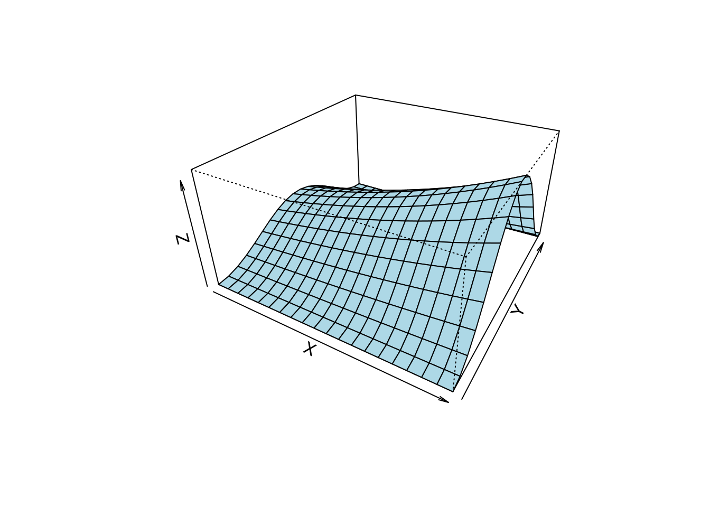
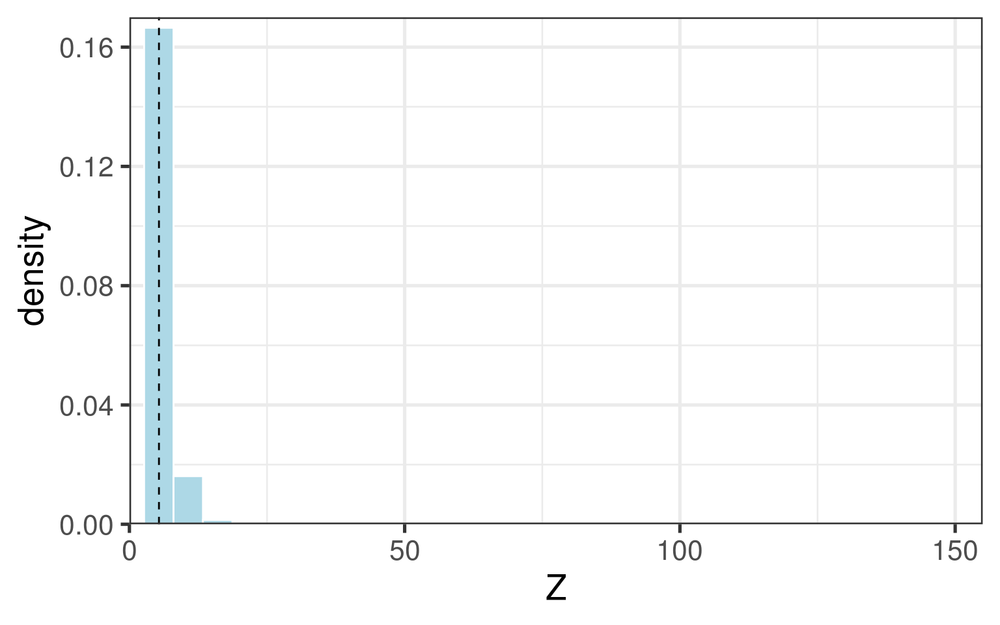
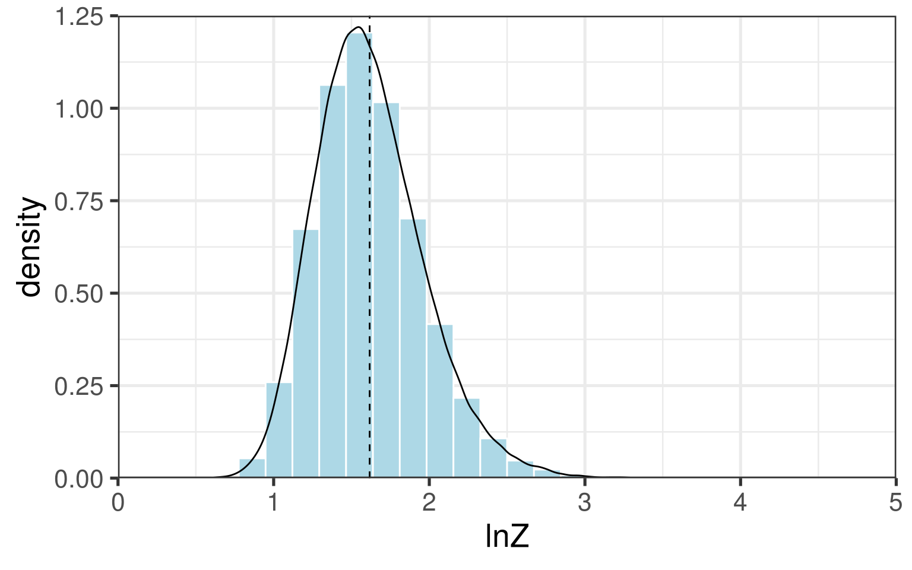

基于泰勒展开的不确定性传递
1 两个输入变量
假设随机变量\(Z\)是随机变量\(X\)和随机变量\(Y\)的函数，函数关系如下
\[Z=f(X,Y)\]
其中\(X\)和\(Y\)的均值分别为\(\overline{X}\)和\(\overline{Y}\)，方差分别为\(D_{X}\)1和\(D_{Y}\)，协方差为\(D_{XY}\)。对\(Z\)进行关于\(\overline{X}\)和\(\overline{Y}\)泰勒展开可以得到
\[Z=f(\overline{X},\overline{Y})+f_{X}^{\prime}(\overline{X},\overline{Y})(X-\overline{X})+f_{Y}^{\prime}(\overline{X},\overline{Y})(Y-\overline{Y})+o(X,Y)\]
如果忽略高阶项\(o(X,Y)\)，那么根据随机变量求和的期望和方差计算公式
\[\mathbb{E}(X+Y)=\mathbb{E}(X)+\mathbb{E}(Y)\]
和
\[\text{var}(X+Y)=\text{var}(X)+\text{var}(Y)+2\text{cov}(X,Y)\]
可以得到\(Z\)的期望值与方差值分别如下
\[\overline{Z}=f(\overline{X},\overline{Y})\]
和
\[D_{Z}=f_{X}^{\prime}(\overline{X},\overline{Y})^{2}D_{X}+f_{Y}^{\prime}(\overline{X},\overline{Y})^{2}D_{Y}+2f_{X}^{\prime}(\overline{X},\overline{Y})f_{Y}^{\prime}(\overline{X},\overline{Y})D_{XY}\]
如果我们对\(X\)、\(Y\)和\(Z\)取对数，那么理论上存在
\[\ln Z=g(\ln X,\ln Y)\]
根据泰勒展开公式，有
\[\begin{align} \ln Z & =g(\overline{\ln X},\overline{\ln Y})+g_{\ln X}^{\prime}(\overline{\ln X},\overline{\ln Y})(\ln X-\overline{\ln X})+\nonumber \\ & g_{\ln Y}^{\prime}(\overline{\ln X},\overline{\ln Y})(\ln Y-\overline{\ln Y})+o(\overline{\ln X},\overline{\ln Y}) \end{align}\]
其中
\[\begin{align} g_{\ln X}^{\prime}(\overline{\ln X},\overline{\ln Y}) & =\left[\dfrac{\partial\ln Z}{\partial\ln X}\right]_{\ln X=\overline{\ln X},\,\ln Y=\overline{\ln Y}}\\ & =\left[\dfrac{\partial Z}{Z}/\dfrac{\partial X}{X}\right]_{X=\overline{X},\,Y=\overline{Y}}\\ & =S_{X}(\overline{X},\overline{Y}) \end{align}\]
这里\(S_X\)表示参数\(X\)的相对敏感性系数(类似于经济学中的弹性系数)2。根据以上推导可以得到\(\ln Z\)的期望值与方差值分别如下
\[\overline{\ln Z}=g(\overline{\ln X},\overline{\ln Y})\]
和
\[\begin{align} D_{\ln Z} & =S_{X}(\overline{X},\overline{Y})^{2}D_{\ln X}+S_{Y}(\overline{X},\overline{Y})^{2}D_{\ln Y}+\nonumber \\ & 2S_{X}(\overline{X},\overline{Y})S_{Y}(\overline{X},\overline{Y})D_{\ln X\ln Y} \end{align}\]
2 多个输入变量
对于更一般的情况，假设\(Z\)是变量\(X_{1},X_{2},\cdots,X_{n}\)的函数
\[Z=f(X_{1},X_{2},\cdots,X_{n})\]
同时有
\[\ln Z=g(\ln X_{1},\ln X_{2},\cdots,\ln X_{n})\]
那么\(Z\)的期望值与方差值分别如下
\[\overline{Z}=f(\overline{X}_{1},\overline{X}_{2},\cdots,\overline{X}_{n})\]
和
\[\begin{align} D_{Z} & =\sum_{i=1}^{n}f_{X_{i}}^{\prime}(\overline{X}_{1},\overline{X}_{2},\cdots,\overline{X}_{n})^{2}D_{X_{i}}+\nonumber \\ & \sum_{i=1}^{n}\sum_{j=1}^{n}f_{X_{i}}^{\prime}(\overline{X}_{1},\overline{X}_{2},\cdots,\overline{X}_{n})f_{X_{j}}^{\prime}(\overline{X}_{1},\overline{X}_{2},\cdots,\overline{X}_{n})D_{X_{i}X_{j}} \end{align}\]
以及\(\ln Z\)的期望值与方差值分别如下
\[\overline{\ln Z}=g(\overline{\ln X_{1}},\overline{\ln X_{2}},\cdots,\overline{\ln X_{n}})\]
和
\[\begin{align} D_{\ln Z} & =\sum_{i=1}^{n}S_{X_{i}}(\overline{X}_{1},\overline{X}_{2},\cdots,\overline{X}_{n})^{2}D_{\ln X_{i}}+\nonumber \\ & \sum_{i=1}^{n}\sum_{j=1}^{n}S_{X_{i}}(\overline{X}_{1},\overline{X}_{2},\cdots,\overline{X}_{n})S_{X_{j}}(\overline{X}_{1},\overline{X}_{2},\cdots,\overline{X}_{n})D_{\ln X_{i}\ln X_{j}} \end{align}\]
3 举个例子
假设随机变量\(Z\)与随机变量\(X\)和随机变量\(Y\)满足如下的函数关系
\[Z=e^X\sin^2Y\]

这里\(X\sim\mathcal{LN}(0.5,0.04)\)，\(Y\sim\mathcal{LN}(0.3,0.01)\)，并且\(X\)和\(Y\)互相独立。分别将\(Z\)对\(X\)和\(Y\)求导，可以得到
\[\dfrac{\partial Z}{\partial X}=e^{X}\sin^{2}Y\]
和
\[\dfrac{\partial Z}{\partial Y}=2e^{X}\sin Y\cos Y\]
另外，对于\(X\sim\mathcal{LN}(\mu,\sigma^2)\)，有
\[\mathbb{E}(X)=e^{\mu+\frac{1}{2}\sigma^{2}}\]
和
\[\text{var}(X)=(e^{\sigma^{2}}-1)e^{2\mu+\sigma^{2}}\]
那么有\(\overline{X}=1.682\)，\(D_{X}=0.115\)，\(\overline{Y}=1.357\)，\(D_{Y}=0.018\)。则\(Z\)的期望值与方差值的计算结果分别如下
\[\overline{Z}=e^{\overline{X}}\sin^{2}\overline{Y}= 5.134\]
和
\[D_{Z}=f_{X}^{\prime}(\overline{X},\overline{Y})^{2}D_{X}+f_{Y}^{\prime}(\overline{X},\overline{Y})^{2}D_{Y}= 3.135\]
如果采用Monte Carlo随机模拟，估算出的\(\overline{Z}=5.37\)，\(D_{Z}=4.82\)。

另外，\(\ln Z\)的期望值与方差值的计算结果分别如下
\[\overline{\ln Z}=\ln(e^{\overline{X}}\sin^{2}\overline{Y})= 1.636\]
和
\[D_{\ln Z}=S_{X}(\overline{X},\overline{Y})^{2}D_{\ln X}+S_{Y}(\overline{X},\overline{Y})^{2}D_{\ln Y}= 0.117\]
如果采用Monte Carlo随机模拟，估算出的\(\overline{\ln Z}=1.617\)，\(D_{\ln Z}=0.119\)。
